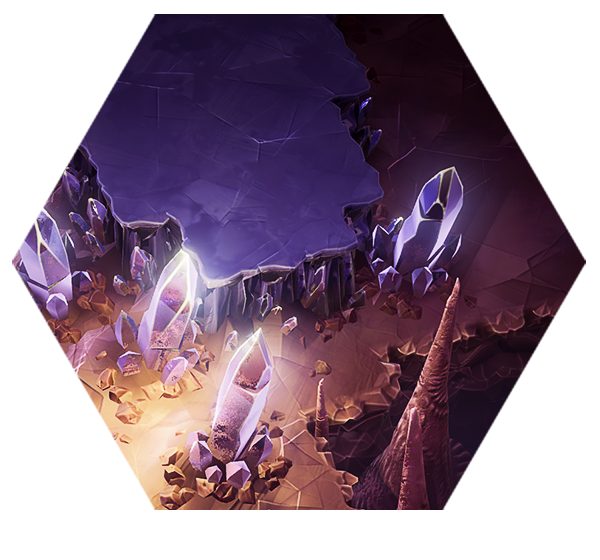

"Bien que de nombreux barbesvertes commencent leur carrière ici, ne vous laissez pas tromper par la beauté de cet endroit. Le Joyau de Hoxxes est aussi dangereux qu'il est à couper le souffle."
– Description du Noyau Magmatique
Les Cavernes Cristallines sont débloquées par défaut. Ce biome standard présente un terrain minier violet avec des structures cristallines violettes. Les ennemis apparaissent à une difficulté normale.
| Niveau de Danger | Points de Biome Nécessaires | Objectifs du Biome |
|---|---|---|
| Danger 1 | Débloqué par défaut |
|
| Danger 2 | 5 |
|
| Danger 3 | 15 |
|
| Danger 4 | 25 |
|
| Danger 5 | 35 |
|